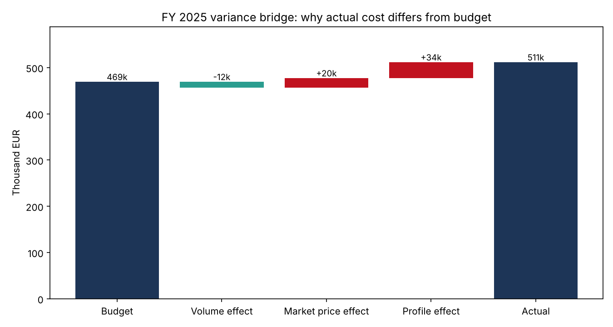

Energy cost controlling
Why did 1,000 homes spend 9% more on electricity than planned?
+9%over budget in 2025, traced down to the cause
I built a SQL pipeline with automated data quality checks and split the gap between budget and actual cost into volume, price and timing. The price level was not the main problem. Homes with solar panels buy most of their power in the evening and in winter, exactly when it is most expensive.
